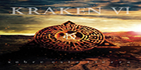

Kraken es una banda colombiana de hard rock y heavy metal, fundada en la ciudad de Medellín, Colombia en junio de 1984.1 De gran auge en Colombia e Hispanoamérica desde los años 80, llegando a sonar en Europa y América y países como Estados Unidos, México, Argentina, Canadá, Perú, España y Japón, entre otros. Su vocalista, letrista y líder fue Elkin Ramírez hasta su deceso que se produjo el día 29 de enero de 2017.

En 1986 se logra concretar la grabación del primer sencillo en formato de 45 revoluciones, incluyendo la condición de recaudar 500 firmas de personas comprometidas a comprar las copias exigidas, que al final agotarían 10 ediciones, o sea, hasta vender 10.000 copias. Los temas elegidos para este primer sencillo fueron «Todo Hombre es una Historia» y «Muere Libre».LEER +

Kraken II es el nombre del segundo álbum de estudio del grupo de heavy metal colombiano Kraken.2 Fue lanzado al mercado el 5 de diciembre de 1989 a través de Codiscos. El primer sencillo del álbum fue «Vestido de cristal» su segundo corte fue «Una vez más» el primero logra rápidamente la aceptación del público en general, de esta manera inició una nueva etapa artística escalando posiciones importantes en las listas de "hits" radiales.LEER +
Kraken III es el nombre del tercer álbum de estudio del grupo de heavy metal colombiano Kraken.1 Fue lanzado al mercado el 4 de septiembre de 1990 a través de Sonolux. El primer sencillo del álbum fue «Rostros ocultos». Su segundo sencillo fue «Lágrimas de fuego». Este álbum confirmó la tendencia progresiva de la banda, que ofreció una identidad al grupo y un concepto de lo que sería Kraken a futuro. Jaime Ochoa Lalinde después de haber sido un músico invitado en el álbum anterior (Kraken II) entra a ser parte de la alineación de la banda en este álbum.LEER +
Piel de cobre es el nombre del cuarto álbum de estudio del grupo de heavy metal colombiano Kraken.1 Fue lanzado al mercado el 4 de noviembre de 1993 a través de Discos Fuentes. El primer sencillo del álbum fue «Lenguaje de mi piel». Su segundo sencillo fue «Piel de cobre».LEER +
El símbolo de la huella es el nombre del quinto álbum de estudio del grupo de heavy metal colombiano Kraken.1 Fue lanzado al mercado el 3 de agosto de 1995 a través de Discos Fuentes. El primer sencillo del álbum fue «Silencioso amor». Su segundo sencillo fue «El símbolo de la huella».LEER +
Una leyenda del rock es el nombre del sexto álbum de estudio del grupo de heavy metal colombiano Kraken.1 Fue lanzado al mercado el 21 de diciembre de 1999 a través de Codiscos. El primer sencillo del álbum fue «El idioma del rock». Su segundo sencillo fue «Frágil al viento»LEER +
Humana deshumanización es el nombre del séptimo álbum de estudio del grupo colombiano de heavy metal Kraken.1 Fue lanzado al mercado el 24 de octubre de 2009 a través de Athenea Producciones, tras 10 años de su último material de estudio. En este álbum se puede apreciar la madurez de un sonido ya consolidado. Después de muchos éxitos y de adquirir una gran cantidad de seguidores en el mundo, la banda confirma esta etapa con un sonido fuerte y ambicioso. El primer sencillo del álbum fue «El tiempo no miente jamás». Su segundo sencillo fue «Rompiendo el hechizo».LEER +
Sobre esta tierra es el nombre del octavo álbum de estudio del grupo colombiano de heavy metal Kraken.1 Fue lanzado al mercado el 10 de septiembre de 2016 en formato digital (mediante plataformas como Spotify) y en formato físico de CD el 20 del mismo mes. Al igual que su último trabajo de estudio, el álbum fue producido por Athenea Producciones. El primer sencillo del álbum fue «La barca de los locos», el cual fue publicado en el año 2013. Su segundo sencillo fue «No importa que mientas». En el video de este último, protagonizan una puesta en escena de danza contemporánea en el Palacio de la Cultura Rafael Uribe Uribe de Medellín.2LEER +